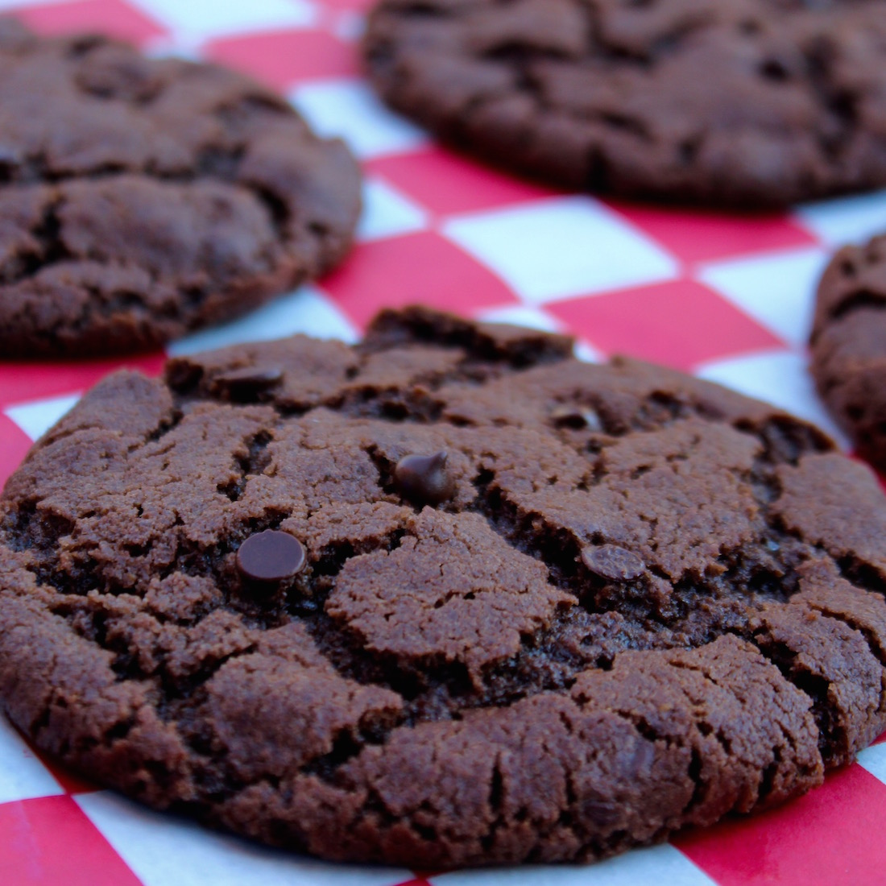

Chocolate Cookies

Description
Best Double Chocolate Chip Cookie
From crazyforcrust.com
Ingredients
- ½ cup (113g) unsalted butter, melted
- ⅓ cup (67g) granulated sugar
- ½ cup (100g) packed light brown sugar
- 1 large egg
- 1 teaspoon vanilla extract
- ¼ cup (20g) unsweetened cocoa powder not dutch process
- ½ teaspoon baking soda
- ½ teaspoon salt
- 1 ⅓ cups (165g) all-purpose flour
- 1 ½ cups (255g) chocolate chips (semi-sweet or milk)
Steps
- Place melted butter in the bowl of a stand mixer fitted with the paddle attachment (or a large bowl if using a hand mixer). You can also just use a wooden spoon to mix these! Add granulated and brown sugars and mix on low speed until the mixture is smooth. Mix in egg and vanilla extract and mix on medium speed until combined.
- Mix in cocoa, baking soda, and salt, then slowly mix in flour and mix just until the batter is smooth and comes together. Be sure to scrape the sides of the bowl during mixing. Slowly mix in chocolate chips.
- Line a cookie sheet with a silicone baking mat or parchment paper. Scoop 2 tablespoon balls of dough onto the cookie sheet. Spacing doesn’t matter because you will be chilling the dough. Cover with plastic wrap and chill for at least 1-2 hours.
- Preheat oven to 350°F. Line a second cookie sheet with parchment paper or a silicone baking mat.
- Remove the chilled cookie dough balls from the refrigerator and space them 2-inches apart on the cookie sheets. Bake (2 tablespoon sized cookies) for 11-15 minutes, or until the edges are a light golden and the tops are no longer glossy. Let cool on the cookie sheets at least 10 minutes before removing.
- For the gooey chocolate chip look, top the just baked cookies with a few chocolate chips!